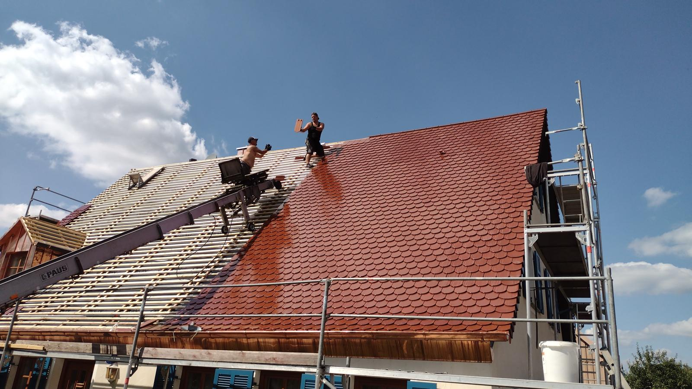
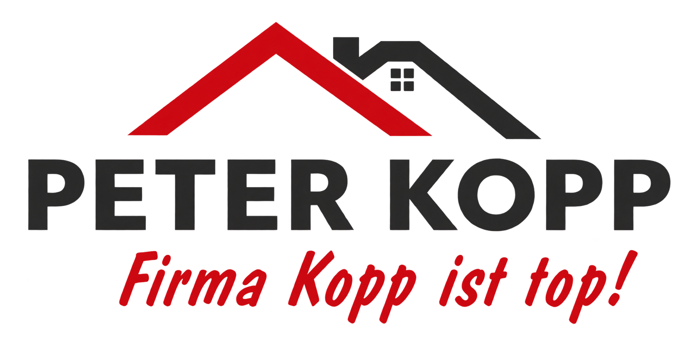
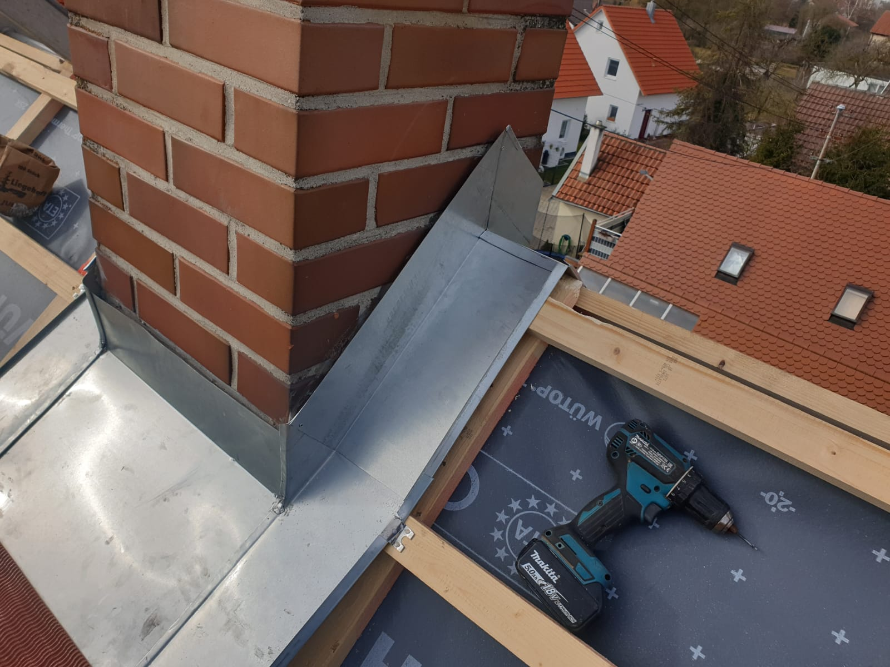

Dacheindeckung
Langlebige Dachlösungen mit Ton, Stein oder Metall – abgestimmt auf Gebäude, Architektur und Budget.


Dachhandwerk aus Mönchsroth
Solides Handwerk. Klare Absprachen. Schnelle Hilfe – vom ersten Ziegel bis zum letzten Detail.
Peter Kopp Dachdeckerei
Als familiengeführter Handwerksbetrieb kümmern wir uns um alle Arbeiten rund ums Dach – direkt, verlässlich und ohne unnötige Umwege.
Von Markenprodukten von Braas und Creaton bis zu regionalen Lösungen wählen wir Material und Ausführung passend zu Ihrem Gebäude.
Leistungen
Vom kleinen Detail bis zur kompletten Dachlösung – fachgerecht geplant und sauber umgesetzt.
Langlebige Dachlösungen mit Ton, Stein oder Metall – abgestimmt auf Gebäude, Architektur und Budget.
Fachgerechter Schutz vor Feuchtigkeit und Witterung für dauerhaft sichere Dachflächen.
Mehr Licht, mehr Wohnqualität: Einbau, Austausch und saubere Einfassung moderner Dachfenster.
Präzise Verkleidungen und handwerklich saubere Metallarbeiten an Dach, Kamin und Fassade.
Durchdachte Lösungen für Ausbau, Umbau, Neubau, Sanierung und Renovierung aus einer Hand.
Sturmschaden oder dringende Reparatur?
Ausgewählte Arbeiten
Echte Einblicke in ausgeführte Arbeiten – von der Eindeckung über Metallarbeiten bis zum präzisen Anschlussdetail.
Der Ablauf
Sie schildern kurz Ihr Vorhaben oder Problem.
Wir prüfen die Situation und beraten transparent.
Wir arbeiten fachgerecht, sauber und termintreu.

DetailarbeitUnser Anspruch
Zuverlässigkeit, fachliches Können und ein kundenfreundlicher Service bilden die Grundlage unserer Arbeit. Sie erhalten persönliche Beratung, nachvollziehbare Lösungen und eine transparente Abrechnung.
Karriere bei Kopp
Wir suchen kompetente Dachdecker zur Verstärkung unseres Teams. Wenn du engagiert bist und gute Arbeit liebst, freuen wir uns auf deine Bewerbung.
Jetzt bewerbenKontakt
Erzählen Sie uns kurz von Ihrem Vorhaben. Wir melden uns persönlich und beraten Sie unverbindlich.